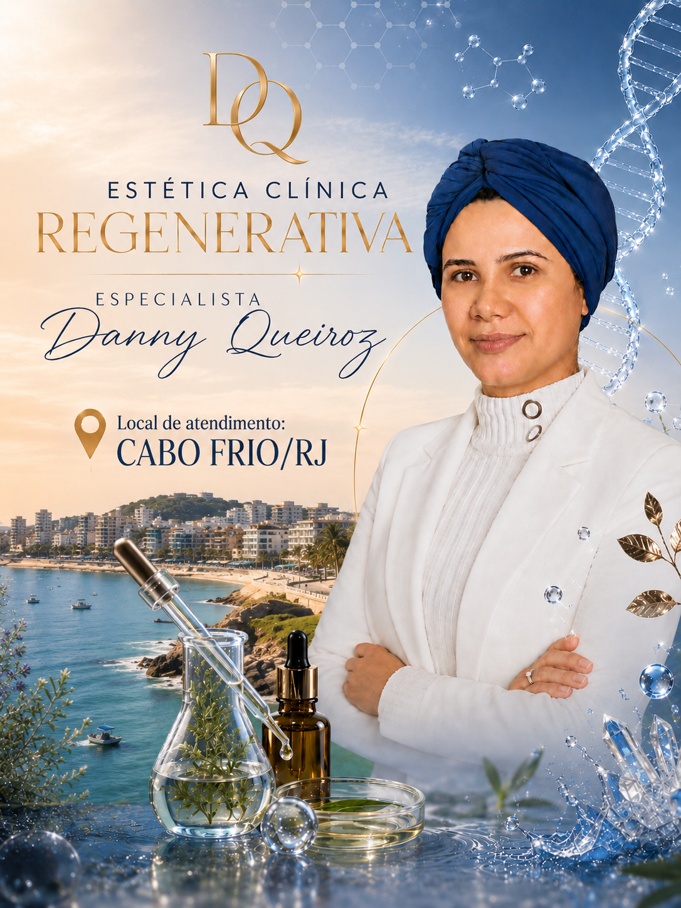

Atendimento especializado para Rejuvenescimento Facial em Cabo Frio RJ, Arraial do Cabo, São Pedro da Aldeia, Búzios e Região dos Lagos.
Protocolos personalizados focados em flacidez facial, linhas de expressão, estímulo de colágeno e prevenção do envelhecimento precoce.
Agendar Avaliação
Nosso atendimento de rejuvenescimento facial em Cabo Frio é pensado para a realidade da Região dos Lagos, onde a alta exposição solar influencia diretamente no envelhecimento da pele. Por isso, muitas pessoas da região procuram tratamento quando percebem flacidez, manchas ou perda de firmeza.
Trabalhamos com protocolos não invasivos, seguros e personalizados. Cada paciente passa por uma avaliação detalhada para identificar o melhor plano de tratamento, focado tanto na prevenção quanto na regeneração da pele. O objetivo é melhorar a qualidade da pele de forma natural, sem procedimentos artificiais.
Cabo Frio possui um dos climas mais intensos de exposição solar da Região dos Lagos, com alta incidência de radiação ultravioleta durante grande parte do ano.
Essa exposição constante pode acelerar o fotoenvelhecimento, favorecendo o surgimento de manchas, perda de elasticidade, ressecamento e linhas de expressão.
Atividades ao ar livre, praias e esportes são comuns na região, mas sem proteção adequada, a pele sofre danos cumulativos ao longo dos anos.
O colágeno é essencial para a firmeza e sustentação da pele. Com o passar dos anos, sua produção natural diminui, o que leva à flacidez e à perda de definição facial.
Em regiões com alta exposição solar como Cabo Frio, esse processo pode ocorrer de forma ainda mais acelerada devido ao impacto dos raios UV sobre as fibras de colágeno.
Fatores como estresse, alimentação inadequada e hábitos de vida também contribuem para essa redução.
A prevenção é essencial para manter a saúde da pele a longo prazo. Quanto antes forem iniciados os cuidados, melhores são os resultados na preservação da firmeza e qualidade cutânea.
O rejuvenescimento facial atua não apenas na correção dos sinais já existentes, mas também na estimulação dos mecanismos naturais da pele, promovendo uma melhora progressiva e duradoura.
Com mais de 10 anos de experiência em estética facial, desenvolvo protocolos personalizados voltados para regeneração da pele, prevenção do envelhecimento precoce e melhora da firmeza facial.
Cada paciente passa por uma avaliação individualizada para identificar as necessidades específicas da pele e definir o melhor plano de tratamento.
O acompanhamento é contínuo, com orientações detalhadas e estratégias para manutenção dos resultados a longo prazo.
A avaliação é uma consulta detalhada para entender o tipo de pele, histórico e objetivos do paciente.
Utilizamos técnicas personalizadas como limpeza nanotecnológica, microagulhamento, jato de plasma e peelings específicos.
A maioria das técnicas é confortável, podendo ser usados anestésicos tópicos quando necessário.
O número de sessões varia conforme cada caso, sendo definido após a avaliação inicial.
Sim, todas as técnicas são seguras e realizadas com acompanhamento profissional especializado.
Sim, o protocolo é adaptado para cada fase da vida e necessidade da pele.
Quanto mais cedo você começa o cuidado com a pele, melhores são os resultados na prevenção do envelhecimento.
Agendar Consulta pelo WhatsApp